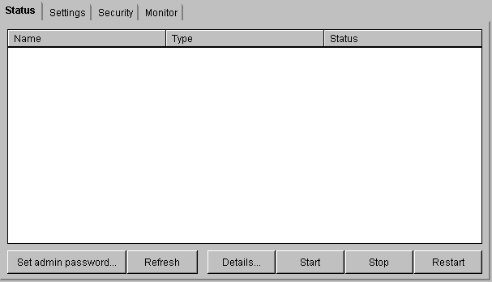
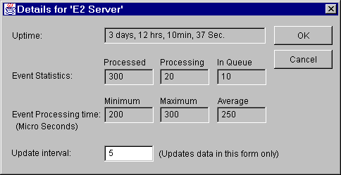

Module: Status
This module shows the status of the E2 server as well as all the application on this E2 server. Name filed displays the name of the server or the application, the type filed indicates weather it is server or application and the status shows weather the application is running or disabled condition.
Alternatively the list control will show icons the type and status. Each row will have an icon (server\application and disabled or enabled) list windows list control.
When server is disabled no applications will be shown, there will be only one entry for server indicating disabled
state. Start, Stop and restart buttons will be enabled and disabled appropriately when the selected item is changed.
Initialization
The Init() method of the applet fills the server and application details into the list control. The applet connects to the ObjectStoreManager on E2 server and requests for ObjectStoreClient.
Note:For more details on ObjectStoreManager and ObjectStoreClient, please see the com.percussion.objectsore package in the main E2 server specification.
Once ObjectStoreClient connection is established, call getApplicationSummaries method on ObjectStoreClient class to get all the running applications on this E2 server. This information will be updated in the list control.

Admin Password
Click on this button to update the admin password for E2 server. When E2 server is installed 'admin' will be used as the default password. Use this to log into admin client for the first time. Once in Status module, click on this button to change the password from 'admin' to some thing more secure.
Note:For more details on this Admin password dialog see PSAdminPassowrd class in com.percussion.server.admin package.
Refresh
This will call initialization method to fill the application and server status data again from E2 server.
Details
Click on this button to see the more details about E2 server or an application. This will bring up the following dailog.

The details for the currently selected item from list control will be shown initially. To see the details for different application select it from the combo box labeled 'Status details for:'
Note: For more details, see PSServerEventStats class in com.percussion.server package
Start
This button will be enabled when the selected application or server is in disabled state.Click on this button to start selected server or application.
Stop
This button will be enabled when a running server or application is selected. Click on this button to shutdown the server or disable a running application.
Restart
This will only applicable to server. This will shutdown the server and restart again. (Should it try to enable all the applications by default???)
Note: Start and stop buttons will be applicable to applications assuming application state can be set to enabled
or disabled. If applications do not have any state information, these buttons will only be applied to server.